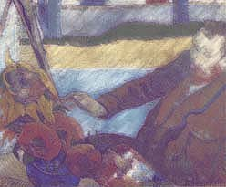

|
A Closing Question:
Was it on a day when the two of you were tired of fighting
or a day when, heavy with the reek of drink
and the scent of other flowerings under his hands,
Gauguin found you and your work an easier subject?
Flattened, that's what he's done to your writhing forms,
your reported tension at the easel. See how he has you
reclined, distant from those contorted ripples
of paint, those petals that crawled from your fingers
onto the canvas? They sear themselves into his eyes,
till he begs for distance, and the mercy of eclipse.
|
 |